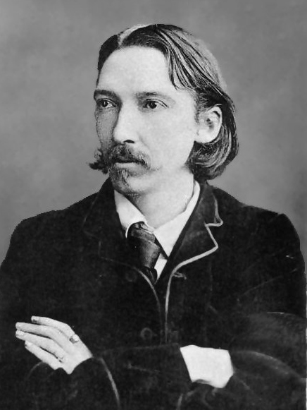

A Iha do Tesouro

História sobre piratas
Você ama histórias de piratas? Sim! Então, A Ilha do Tesouro é o seu livro ideal. Esta obra foi responsável por popularizar o papagaio no ombro, o “X” do mapa do tesouro, a perna de pau e as batalhas épicas nos navios piratas.Um dos clássicos da literatura infantojuvenil, o livro conquistou o imaginário popular e tornou-se um ícone da literatura mundial, chegando a ser adaptado para o cinema. Prova disso é que não dá para pensar em tesouros sem imaginar um pirata!Mergulhe nessa incrível história de Jim Hawkins e sua aventura pelo mar!
COMPRAR
Uma história de aventura, suspense e ação
A Ilha do Tesouro A história se qualifica como um romance de formação, pois mostra o crescimento e a maturidade de Jim Hawkins ao longo da sua jornada. A história também explora temas como a ambição, a lealdade, a coragem e a traição.
Informações sobre o autor

Robert Louis Stevenson foi um escritor e poeta escocês, nascido em Edimburgo em 1850. Ele é famoso por seus romances de aventura, como A Ilha do Tesouro, O Médico e o Monstro e As Aventuras de David Balfour.
A Ilha do Tesouro A história também explora temas como a ambição, a lealdade, a coragem e a traição. A Ilha do Tesouro é uma obra que agrada a leitores de todas as idades, pois combina elementos de fantasia, realismo e ficção histórica. 📚
Esses e mais detalhes podem ser vistos na história de piratas!
COMPRAR